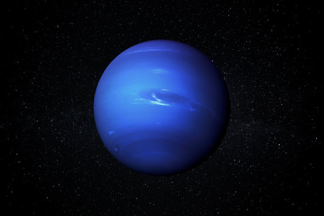

Neptune is the eighth and farthest planet from the Sun, an ice giant known for its deep blue color, supersonic winds, and dynamic storms. It is similar to Uranus but more active, with a stronger internal heat source and more visible weather patterns.
📌 Key Facts
- Eighth planet from the Sun
- Distance from Sun: 4.5 billion km
- Rotation(Day): 16 hours
- Orbital Period(Year): 165 Earth years
- Orbital Speed: 5.4 km/s
🔴Unique Featuures
It has atleast 14 known moons, Triton- The largest moon, retrograde orbit , geologically active with geysers of nitrogen. Faint, dark rings made of dust and ice particles. Magnetic field is tilted and offset from the planet's center. It's magnetic field creates complex magnetospheric interactions. Dark spots appear and disappear , showing dynamic atmospheric changes